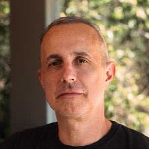

Luke Stiles is an engineering leader currently focused on AI enablement and agentic production systems; independent adviser since forever.

ADVISORY
I advise on strategy, product, technology, and operations — usually where they stop agreeing with each other.
Engagements are small and high impact: a hard question, a second opinion before a big decision, a standing call.
→ luke [at] lukestiles [dot] com
THOUGHTS
linkedinBasketball & Bots
substackCognitive Security Is Real
podcastThe Value of Humanity Will Go Up — Product Momentum, ep. 164
LORE
2010Empire Begins — co-directed action sports feature on NYC fixed-gear riding; premiered at the Bicycle Film Festival
2006“Talking Heads: Remain in Light” — PopMatters, review
2003“The Blood Brothers, live at the Knitting Factory” — PopMatters, review
~2002“My Bloody Valentine: Loveless” — Turntable Lab, review
LINKS
x.com/lukestiles
linkedin.com/in/lukestiles
ambientdistortion.substack.com
github.com/lukestiles
luke [at] lukestiles [dot] com